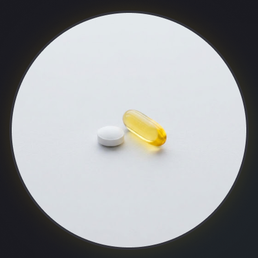

부모님과 자녀를 마음으로 잇는 '효TV'
TV 시청 중에도, TV가 꺼져있어도 자연스러운 아침 안부 인사, 정시 스마트 복약 알림을 보내고 답변을 기록합니다.
그리고 5:5 대형 화면 영상통화까지 마음 편히 경험해보세요.
엄마 좋은 아침이에요. 잘 잤어요?
아침 인사에 소리내어 대답해보세요
1. 하루를 시작하는 아침 인사
매일 아침 부모님의 안부를 확인합니다. 자녀의 사진과 목소리로 다정한 인사를 전하고, 부모님은 음성으로 간단하게 응답합니다.
9월3일(목) 오전8시
엄마 약 먹었어?

2. 스마트 복약 알림
TV가 꺼져있어도, 시청 중에도 복약시간이 되면 TV화면에 자녀의 음성과 팝업 창으로 알림을 드립니다. 일정한 시간에 복약이 필요한 어르신 들이 잊지 않도록 사진과 함께 알려드려요.
딸 지영 스마트폰 통화 연결 중...
3. 5:5 TV 대화면 영상통화
작은 화면이 아닌 TV화면을 통해 자녀의 얼굴을 더 크게 더 가깝게 통화 할 수 있습니다. 휴대폰으로 화면 조절이 어려워서, 사용할 줄 몰라서 음성통화만 하던 어르신들이 자녀들의 얼굴을 더 크게, 더 가깝께 보며 편하게 통화 할 수 있도록 도와드립니다.
엄마 좋은 아침이에요. 잘 잤어요?
아침 인사에 소리내어 대답해보세요
KBS1 LIVE 건강 TV 시청 중
📺 TV 시청 중... (3초 후 복약 알림 전환)
SBS DRAMA LIVE 일일드라마 시청 중
📺 일일 드라마 시청 중... (3초 후 영상통화 수신 전환)